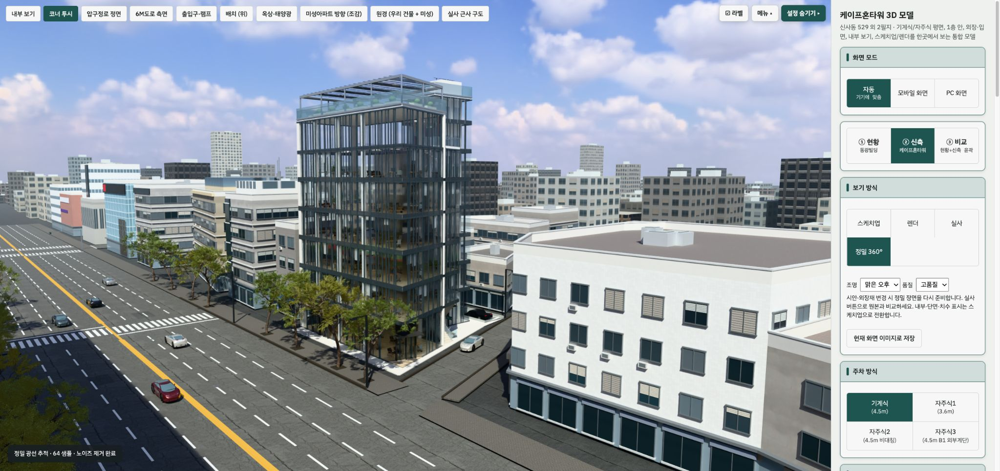
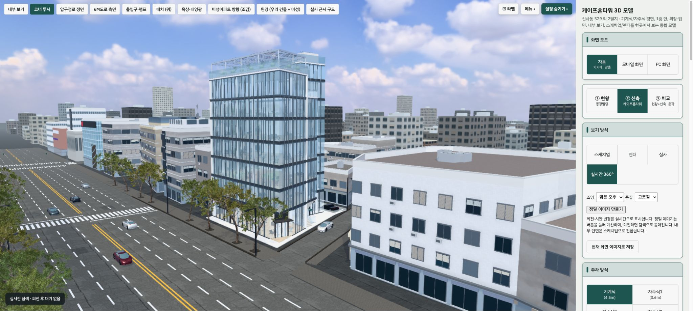

정밀 완성 약 78초 / 각도 변경 후 약 54초
고품질 64샘플 + 노이즈 제거

초기 준비 약 14~17초 / 회전 후 누적 렌더 대기 없음
환경 반사·유리 투명도·실시간 그림자·접촉 음영. 정밀 이미지는 별도 버튼.
동일한 Mac의 Chrome, 기계식·올 글라스 기본 구도. 로컬 서버와 브라우저 캐시를 사용한 관찰값이며 기기별 보장값은 아닙니다. 두 화면은 렌더링 방식이 다릅니다. 실시간 화면은 정밀 광선 추적과 같은 반사·굴절 정확도를 제공하지 않습니다.
시안·층수·층고를 변경해도 원본 모델을 사용합니다. 전체 라이트맵 베이킹은 아직 적용하지 않았습니다.